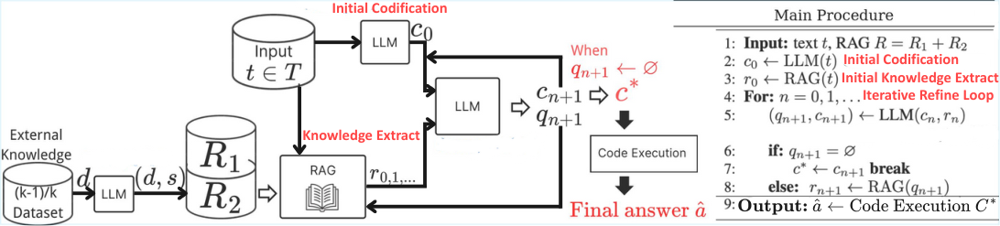
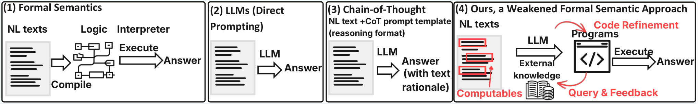
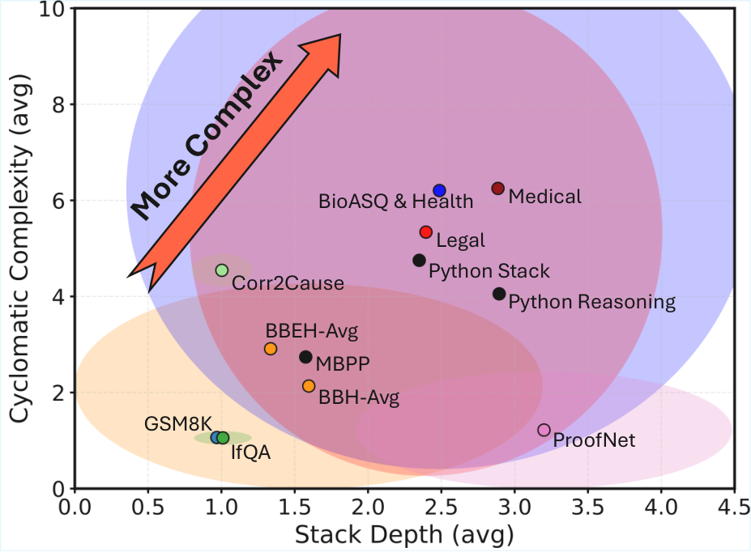

Uses LLM-filled, hand-designed Lean templates checked by Lean as a feasibility probe for proof-level formalization of benchmark instances.
Abstract
State-of-the-art NLP benchmarks require interpretation of natural language that specifies conditions, procedures, and exceptions, often relying on implicit assumptions and external knowledge. Constructing complete semantic representations with proof-theoretic guarantees is frequently impractical at scale, and purely text-based reasoning offers limited means of inspection. This paper asks how much understanding of benchmark language can be achieved when formal semantic guarantees are weakened. We investigate this question by extracting computables: executable representations whose runtime behavior provides operational evidence of semantic adequacy, including executability, execution traces, and runtime failures. We induce and iteratively refine computables for benchmark instances using retrieval from external knowledge. Across mathematical reasoning, multi-step reasoning, causal inference, and rule- and exception-heavy legal and biomedical benchmarks, we find that the proposed approach consistently exceeds text-only reasoning and one-shot code execution. Beyond accuracy, our analyses show that these computables provide scalable, inspectable semantic evidence: they expose conditions and exceptions benchmark language forces into executable form, offering a practical bridge between proof-oriented semantics and purely textual reasoning.
Problem
NLP benchmarks in law, medicine, mathematics, and causal reasoning require interpreting conditions and exceptions in natural language. Full proof-oriented formal semantics is impractical at scale, while text-only reasoning is hard to inspect.
Approach
WISE induces executable Python programs ('computables') from benchmark instances and refines them iteratively using retrieved external knowledge and execution feedback such as traces and runtime failures. A feasibility probe asks an LLM to fill hand-designed, task-specific Lean templates (theorem statement plus proof skeleton); the resulting scripts are checked by Lean. The induced programs are analyzed for executability, behavior under metamorphic tests, and control-flow and AST structure.

Figure 2 : Flowchart (left) and pseudocode (right) of our system.

Figure 1 : Four paradigms for mapping natural-language task descriptions to answers.
Results
The fraction of Lean scripts accepted varies sharply by task (BBH-Dyck 100%, GSM8K 69%, CAIL 11%), indicating that proof-level formalization is infeasible at scale for open-textured domains. Using GPT-5, WISE outperforms text-only reasoning and one-shot code baselines across benchmarks, for example raising BBH accuracy from 0.64 to 0.88 and BBEH from 0.17 to 0.37.

Figure 4 : Stack depth vs. cyclomatic complexity across task families. Points include benchmark-induced computables and reference Python corpora (used only for structural calibration).